- Define electric current, ampere, and drift velocity
- Describe the direction of charge flow in conventional current.
- Use drift velocity to calculate current and vice versa.
Electric current is defined to be the rate at which charge flows. A large current, such as that used to start a truck engine, moves a large amount of charge in a small time, whereas a small current, such as that used to operate a hand-held calculator, moves a small amount of charge over a long period of time. In equation form,electric current\(I\) is defined to be
where \(\Delta Q\) is the amount of charge passing through a given area in time \(\Delta t\). As in previous chapters, initial time is often taken to be zero, in which case \(\Delta t = t\). . The SI unit for current is theampere(A), named for the French physicist André-Marie Ampère (1775–1836). From Equation \ref{20.2.1}, we see that an ampere is one coulomb per second:
Not only are fuses and circuit breakers rated in amperes (or amps), so are many electrical appliances.
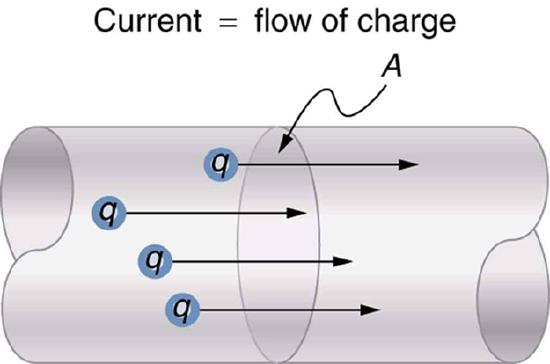
We can use the definition of current in the equation \(I = \Delta Q / \Delta t\) to find the current in part (a), since charge and time are given. In part (b), we rearrange the definition of current and use the given values of charge and current to find the time required.
Entering the given values for charge and time into the definition of current gives
This large value for current illustrates the fact that a large charge is moved in a small amount of time. The currents in these “starter motors” are fairly large because large frictional forces need to be overcome when setting something in motion.
Solving the relationship \(I = \Delta Q / \Delta t\) for time \(\Delta t\), and entering the known values for charge and current gives
This time is slightly less than an hour. The small current used by the hand-held calculator takes a much longer time to move a smaller charge than the large current of the truck starter. So why can we operate our calculators only seconds after turning them on? It’s because calculators require very little energy. Such small current and energy demands allow handheld calculators to operate from solar cells or to get many hours of use out of small batteries. Remember, calculators do not have moving parts in the same way that a truck engine has with cylinders and pistons, so the technology requires smaller currents.
Figure shows a simple circuit and the standard schematic representation of a battery, conducting path, and load (a resistor). Schematics are very useful in visualizing the main features of a circuit. A single schematic can represent a wide variety of situations. The schematic in Figure \(\PageIndex{2b}\), for example, can represent anything from a truck battery connected to a headlight lighting the street in front of the truck to a small battery connected to a penlight lighting a keyhole in a door. Such schematics are useful because the analysis is the same for a wide variety of situations. We need to understand a few schematics to apply the concepts and analysis to many more situations.
![Part a shows a bulb glowing when its terminals are connected to a battery through a wire. The voltage of the battery is labeled as V. The current through the bulb is represented as I, and the current direction is shown using arrows emerging from the positive terminal of the battery, passing through the bulb, and entering the negative terminal of the battery. Part b shows an electric circuit diagram with a resistance connected across the terminals of a battery of voltage V. The current is shown using arrows as emerging from the positive terminal of the battery, passing through the resistance, and entering the negative terminal of the battery.](images/ch20/fig20-3-part-a-shows-a-bulb-glowing-when-its-ter.jpg)
Note that the direction of current flow in Figure is from positive to negative.The direction of conventional current is the direction that positive charge would flow.Depending on the situation, positive charges, negative charges, or both may move. In metal wires, for example, current is carried by electrons—that is, negative charges move. In ionic solutions, such as salt water, both positive and negative charges move. This is also true in nerve cells. A Van de Graaff generator used for nuclear research can produce a current of pure positive charges, such as protons. Figure illustrates the movement of charged particles that compose a current. The fact that conventional current is taken to be in the direction that positive charge would flow can be traced back to American politician and scientist Benjamin Franklin in the 1700s. He named the type of charge associated with electrons negative, long before they were known to carry current in so many situations. Franklin, in fact, was totally unaware of the small-scale structure of electricity.
![In part a, positive charges move toward the right through a conducting wire. The direction of movement of charge is indicated by arrows along the length of the wire. The area of a cross section of the wire is labeled as A. The direction of the electric field E is toward the right, in the same direction as movement of positive charge. The current direction is also toward the right, shown by an arrow. In part b, negative charges move toward the left through a conducting wire. The direction of movement of charge is indicated by arrows along the length of the wire. The area of a cross section of the wire is labeled as A. The direction of the electric field E is toward the right, opposite the direction of movement of negative charge. The current direction is also toward the right, shown by an arrow.](images/ch20/fig20-4-in-part-a-positive-charges-move-toward-t.jpg)
It is important to realize that there is an electric field in conductors responsible for producing the current, as illustrated in Figure Unlike static electricity, where a conductor in equilibrium cannot have an electric field in it, conductors carrying a current have an electric field and are not in static equilibrium. An electric field is needed to supply energy to move the charges.
MAKING CONNECTIONS: TAKE-HOME INVESTIGATION-ELECTRIC CURRENT ILLUSTRATION
Find a straw and little peas that can move freely in the straw. Place the straw flat on a table and fill the straw with peas. When you pop one pea in at one end, a different pea should pop out the other end. This demonstration is an analogy for an electric current. Identify what compares to the electrons and what compares to the supply of energy. What other analogies can you find for an electric current?
Note that the flow of peas is based on the peas physically bumping into each other; electrons flow due to mutually repulsive electrostatic forces.
If the 0.300-mA current through the calculator mentioned in the example is carried by electrons, how many electrons per second pass through it?
The current calculated in the previous example was defined for the flow of positive charge. For electrons, the magnitude is the same, but the sign is opposite, \(I_{electrons} = -0.300 \times 10^{-3} C/s\). Since each electron \(\left( e^{-} \right) \) has a charge of \(-1.60 \times 10^{-19} C\), we can convert the current in coulombs per second to electrons per second.
Starting with the definition of current, we have
We divide this by the charge per electron, so that
There are so many charged particles moving, even in small currents, that individual charges are not noticed, just as individual water molecules are not noticed in water flow. Even more amazing is that they do not always keep moving forward like soldiers in a parade. Rather they are like a crowd of people with movement in different directions but a general trend to move forward. There are lots of collisions with atoms in the metal wire and, of course, with other electrons.
Electrical signals are known to move very rapidly. Telephone conversations carried by currents in wires cover large distances without noticeable delays. Lights come on as soon as a switch is flicked. Most electrical signals carried by currents travel at speeds on the order of \(10^{8} m/s \), a significant fraction of the speed of light. Interestingly, the individual charges that make up the current movemuchmore slowly on average, typically drifting at speeds on the order of \(10^{-4} m/s \). How do we reconcile these two speeds, and what does it tell us about standard conductors?
The high speed of electrical signals results from the fact that the force between charges acts rapidly at a distance. Thus, when a free charge is forced into a wire, as in , the incoming charge pushes other charges ahead of it, which in turn push on charges farther down the line. The density of charge in a system cannot easily be increased, and so the signal is passed on rapidly. The resulting electrical shock wave moves through the system at nearly the speed of light. To be precise, this rapidly moving signal or shock wave is a rapidly propagating change in electric field.
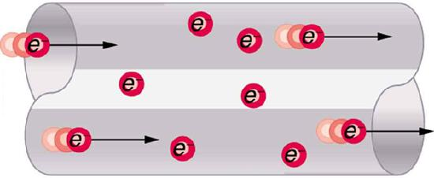
Good conductors have large numbers of free charges in them. In metals, the free charges are free electrons. shows how free electrons move through an ordinary conductor. The distance that an individual electron can move between collisions with atoms or other electrons is quite small. The electron paths thus appear nearly random, like the motion of atoms in a gas. But there is an electric field in the conductor that causes the electrons to drift in the direction shown (opposite to the field, since they are negative). Thedrift velocity\(v_{d}\) i s the average velocity of the free charges. Drift velocity is quite small, since there are so many free charges. If we have an estimate of the density of free electrons in a conductor, we can calculate the drift velocity for a given current. The larger the density, the lower the velocity required for a given current.
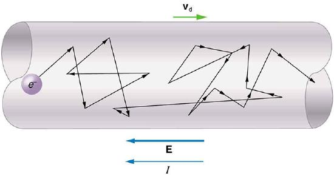
CONDUCTION OF ELECTRICITY AND HEAT
Good electrical conductors are often good heat conductors, too. This is because large numbers of free electrons can carry electrical current and can transport thermal energy.
The free-electron collisions transfer energy to the atoms of the conductor. The electric field does work in moving the electrons through a distance, but that work does not increase the kinetic energy (nor speed, therefore) of the electrons. The work is transferred to the conductor’s atoms, possibly increasing temperature. Thus a continuous power input is required to keep a current flowing. An exception, of course, is found in superconductors, for reasons we shall explore in a later chapter. Superconductors can have a steady current without a continual supply of energy—a great energy savings. In contrast, the supply of energy can be useful, such as in a lightbulb filament. The supply of energy is necessary to increase the temperature of the tungsten filament, so that the filament glows.
MAKING CONNECTIONS: TAKE-HOME INVESTIGATION--FILAMENT OBSERVATIONS
Find a lightbulb with a filament. Look carefully at the filament and describe its structure. To what points is the filament connected?
We can obtain an expression for the relationship between current and drift velocity by considering the number of free charges in a segment of wire, as illustrated in Figure .The number of free charges per unit volumeis given the symbol \(n\) and depends on the material. The shaded segment has a volume \(Ax\), so that the number of free charges in it is \(nAx\). The charge \(\Delta Q\) in this segment is thus \(qnAx\), where \(q\) is the amount of charge on each carrier. (Recall that for electrons, \(q\) is \(-1.60 \times 10^{-19} C\).) Current is charge moved per unit time; thus, if all the original charges move out of this segment in time \(\Delta t\), the current is
Note that \(x/ \Delta t\) is the magnitude of the drift velocity, \(v_{d}\), since the charges move an average distance \(x\) in a time \(\Delta t\). Rearranging terms gives
where \(I\) is the current through a wire of cross-sectional area \(A\) made of a material with a free charge density \(n\). The carriers of the current each have charge \(q\) and move with a drift velocity of magnitude \(v_{d}\).
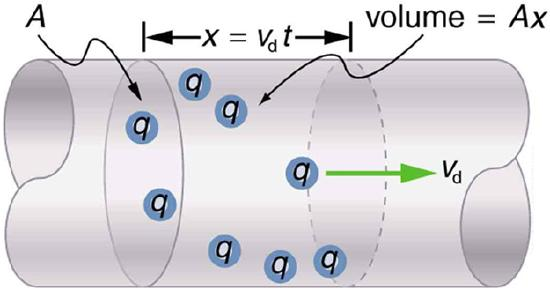
Note that simple drift velocity is not the entire story. The speed of an electron is much greater than its drift velocity. In addition, not all of the electrons in a conductor can move freely, and those that do might move somewhat faster or slower than the drift velocity. So what do we mean by free electrons? Atoms in a metallic conductor are packed in the form of a lattice structure. Some electrons are far enough away from the atomic nuclei that they do not experience the attraction of the nuclei as much as the inner electrons do. These are the free electrons. They are not bound to a single atom but can instead move freely among the atoms in a “sea” of electrons. These free electrons respond by accelerating when an electric field is applied. Of course as they move they collide with the atoms in the lattice and other electrons, generating thermal energy, and the conductor gets warmer. In an insulator, the organization of the atoms and the structure do not allow for such free electrons.
Calculate the drift velocity of electrons in a 12-gauge copper wire (which has a diameter of 2.053 mm) carrying a 20.0-A current, given that there is one free electron per copper atom. (Household wiring often contains 12-gauge copper wire, and the maximum current allowed in such wire is usually 20 A.) The density of copper is \(8.80 \times 10^{3} kg/m^{3}\).
We can calculate the drift velocity using the equation \(I = nqAv_{d}\). The current \(I = 20.0 A\) is given, and \(q = -1.60 \times 10^{-19}C\) is the charge of an electron. We can calculate the area of a cross-section of the wire using the formula \(A = \pi r^{2}\), where \(r\) is one-half the given diameter, 2.053 mm. We are given the density of copper, \(8.80 \times 10^{3} kg/m^{3}\), and the periodic table shows that the atomic mass of copper is 63.54 g/mol. We can use these two quantities along with Avogadro’s number, \(6.02 \times 10^{23} atoms/mol\), to determine \(n\), the number of free electrons per cubic meter.
First, calculate the density of free electrons in copper. There is one free electron per copper atom. Therefore, is the same as the number of copper atoms per \(m^{3}\). We can now find \(n\) as follows:
The cross-sectional area of the wire is
Rearranging \(I = nqAv_{d}\) to isolate drift velocity gives
The minus sign indicates that the negative charges are moving in the direction opposite to conventional current. The small value for drift velocity (on the order of \(10^{-4} m/s\)) confirms that the signal moves on the order of \(10^{12}\) times faster (about \(10^{8} m/s\)) than the charges that carry it.
📖 OpenStax College Physics, Section 20.1. openstax.org · CC BY 4.0
- Explain the origin of Ohm’s law.
- Calculate voltages, currents, or resistances with Ohm’s law.
- Explain what an ohmic material is.
- Describe a simple circuit.
What drives current? We can think of various devices—such as batteries, generators, wall outlets, and so on—which are necessary to maintain a current. All such devices create a potential difference and are loosely referred to as voltage sources. When a voltage source is connected to a conductor, it applies a potential difference \(V\) that creates an electric field. The electric field in turn exerts force on charges, causing current.
The current that flows through most substances is directly proportional to the voltage \(V\) applied to it. The German physicist Georg Simon Ohm (1787–1854) was the first to demonstrate experimentally that the current in a metal wire isdirectly proportional to the voltage applied:
This important relationship is known asOhm's law. It can be viewed as a cause-and-effect relationship, with voltage the cause and current the effect. This is an empirical law like that for friction—an experimentally observed phenomenon. Such a linear relationship doesn’t always occur.
If voltage drives current, what impedes it? The electric property that impedes current (crudely similar to friction and air resistance) is called resistance \(R\). Collisions of moving charges with atoms and molecules in a substance transfer energy to the substance and limit current. Resistance is defined as inversely proportional to current, or
Thus, for example, current is cut in half if resistance doubles. Combining the relationships of current to voltage and current to resistance gives
This relationship is also called Ohm’s law. Ohm’s law in this form really defines resistance for certain materials. Ohm’s law (like Hooke’s law) is not universally valid. The many substances for which Ohm’s law holds are calledohmic. These include good conductors like copper and aluminum, and some poor conductors under certain circumstances. Ohmic materials have a resistance \(R\) that is independent of voltage \(V\) and current \(I\). An object that has simple resistance is called aresistor, even if its resistance is small. The unit for resistance is anohmand is given the symbol \(\Omega\) (upper case Greek omega). Rearrranging \(I = V/R\) gives \(R = V/I\), and so the units of resistance are 1 ohm = 1 volt per ampere:
Figure shows the schematic for a simple circuit. Asimple circuithas a single voltage source and a single resistor. The wires connecting the voltage source to the resistor can be assumed to have negligible resistance, or their resistance can be included in \(R\).
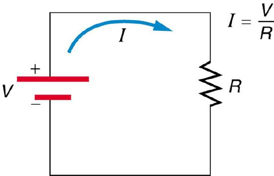
What is the resistance of an automobile headlight through which 2.50 A flows when 12.0 V is applied to it?
We can rearrange Ohm’s law as stated by \(I = V/R\) and use it to find the resistance.
Rearranging Equation \ref{20.3.3} and substituting known values gives
This is a relatively small resistance, but it is larger than the cold resistance of the headlight. As we shall see, resistance of metals usuallyincreaseswithincreasingtemperature, and so the bulb has a lower resistance when it is first switched on and will draw considerably more current during its brief warm-up period.
Resistances range over many orders of magnitude. Some ceramic insulators, such as those used to support power lines, have resistances of \(10^{12} \Omega\) or more. A dry person may have a hand-to-foot resistance of \(10^{5} \Omega \), whereas the resistance of the human heart is about \(10^{3} \Omega\). A meter-long piece of large-diameter copper wire may have a resistance of \(10^{-5} \Omega\), and superconductors have no resistance at all (they are non-ohmic). Resistance is related to the shape of an object and the material of which it is composed, as will be seen in Resistance and Resistivity.
Additional insight is gained by solving \(I = V/R\) for \(V\), yielding
The expression for \(V\) can be interpreted as thevoltage drop across a resistor produced by the low of current\(I\). The phrase \(IR\)dropis often used for this voltage. For instance, the headlight in the example has an \(IR\) drop of 12.0 V. If voltage is measured at various points in a circuit, it will be seen to increase at the voltage source and decrease at the resistor. Voltage is similar to fluid pressure. The voltage source is like a pump, creating a pressure difference, causing current—the flow of charge. The resistor is like a pipe that reduces pressure and limits flow because of its resistance. Conservation of energy has important consequences here. The voltage source supplies energy (causing an electric field and a current), and the resistor converts it to another form (such as thermal energy). In a simple circuit (one with a single simple resistor), the voltage supplied by the source equals the voltage drop across the resistor, since \(PE = q \Delta V\), and the same \(q\) flows through each. Thus the energy supplied by the voltage source and the energy converted by the resistor are equal ( Figure .
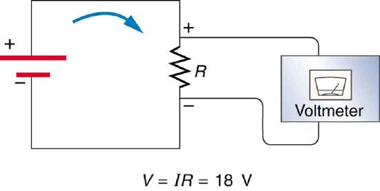
MAKING CONNECTIONS: CONSERVATION OF ENERGY
In a simple electrical circuit, the sole resistor converts energy supplied by the source into another form. Conservation of energy is evidenced here by the fact that all of the energy supplied by the source is converted to another form by the resistor alone. We will find that conservation of energy has other important applications in circuits and is a powerful tool in circuit analysis.
📖 OpenStax College Physics, Section 20.2. openstax.org · CC BY 4.0
- Explain the concept of resistivity.
- Use resistivity to calculate the resistance of specified configurations of material.
- Use the thermal coefficient of resistivity to calculate the change of resistance with temperature.
The resistance of an object depends on its shape and the material of which it is composed. The cylindrical resistor in Figure 1 is easy to analyze, and, by so doing, we can gain insight into the resistance of more complicated shapes. As you might expect, the cylinder’s electric resistance \(R\) is directly proportional to its length \(L\), similar to the resistance of a pipe to fluid flow. The longer the cylinder, the more collisions charges will make with its atoms. The greater the diameter of the cylinder, the more current it can carry (again similar to the flow of fluid through a pipe). In fact, \(R\) is inversely proportional to the cylinder’s cross-sectional area \(A\).
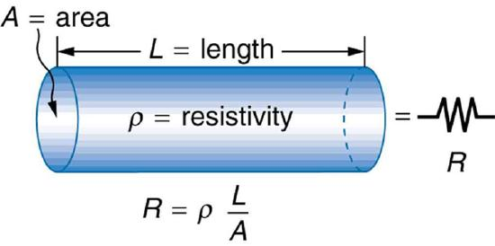
For a given shape, the resistance depends on the material of which the object is composed. Different materials offer different resistance to the flow of charge. We define theresistivity\(\rho\) of a substance so that theresistance\(R\) of an object is directly proportional to \(\rho\). Resistivity \(\rho\) is anintrinsicproperty of a material, independent of its shape or size. The resistance \(R\) of a uniform cylinder of length \(L\), of cross-sectional area \(A\), and made of a material with resistivity \(\rho\), is \[R = \frac{\rho L}{A}. \label{20.4.1}\] The table below gives representative values of \(\rho\). The materials listed in the table are separated into categories of conductors, semiconductors, and insulators, based on broad groupings of resistivities. Conductors have the smallest resistivities, and insulators have the largest; semiconductors have intermediate resistivities. Conductors have varying but large free charge densities, whereas most charges in insulators are bound to atoms and are not free to move. Semiconductors are intermediate, having far fewer free charges than conductors, but having properties that make the number of free charges depend strongly on the type and amount of impurities in the semiconductor. These unique properties of semiconductors are put to use in modern electronics, as will be explored in later chapters.
Table gives representative values of ρ. The materials listed in the table are separated into categories of conductors, semiconductors, and insulators, based on broad groupings of resistivities. Conductors have the smallest resistivities, and insulators have the largest; semiconductors have intermediate resistivities. Conductors have varying but large free charge densities, whereas most charges in insulators are bound to atoms and are not free to move. Semiconductors are intermediate, having far fewer free charges than conductors, but having properties that make the number of free charges depend strongly on the type and amount of impurities in the semiconductor. These unique properties of semiconductors are put to use in modern electronics, as will be explored in later chapters.
| Material | Resistivityρ(Ω⋅m) |
|---|---|
| Conductors | |
| Silver | \(1.59x10^{−8}\) |
| Copper | \(1.72x10^{−8}\) |
| Gold | \(2.44x10^{−8}\) |
| Aluminum | \(2.65x10^{−8}\) |
| Tungsten | \(5.6x10^{−8}\) |
| Iron | \(9.71x10^{−8}\) |
| Platinum | \(10.6x10^{−8}\) |
| Steel | \(20x10^{−8}\) |
| Lead | \(22x10^{−8}\) |
| Manganin (Cu, Mn, Ni alloy) | \(44x10^{−8}\) |
| Constantan (Cu, Ni alloy) | \(49x10^{−8}\) |
| Mercury | \(96x10^{−8}\) |
| Nichrome (Ni, Fe, Cr alloy) | \(100x10^{−8}\) |
| Semiconductors | |
| Carbon (pure) | \(3.5x10^{−5}\) |
| Carbon | \((3.5−6.0)x10^{−5}\) |
| Germanium (pure) | \(600x10^{−3}\) |
| Germanium | \((1−600)x10^{−3}\) |
| Silicon (pure) | 2300 |
| Silion | 0.1−2300 |
| Insulators | |
| Amber | \(5x10^{14}\) |
| Glass | \(10^{9}−10^{14}\) |
| Lucite | \(>10^{13}\) |
| Mica | \(10^{11}−10^{15}\) |
| Quartz (fused) | \(75x10^{16}\) |
| Rubber (hard) | \(10^{13}−10^{16}\) |
| Sulfur | \(10^{15}\) |
| Teflon | \(>10^{13}\) |
| Wood | \(10^{8}−10^{11}\) |
A car headlight filament is made of tungsten and has a cold resistance of0.350Ω. If the filament is a cylinder 4.00 cm long (it may be coiled to save space), what is its diameter?
We can rearrange the equation \(R=\frac{ρL}{A}\) to find the cross-sectional area \(A\) of the filament from the given information. Then its diameter can be found by assuming it has a circular cross-section.
The cross-sectional area, found by rearranging the expression for the resistance of a cylinder given in \(R=\frac{ρL}{A}\), is
Substituting the given values, and taking ρ from Table , yields
The area of a circle is related to its diameter \(D\) by
Solving for the diameter \(D\), and substituting the value found for \(A\), gives
The diameter is just under a tenth of a millimeter. It is quoted to only two digits, because ρ is known to only two digits.
The resistivity of all materials depends on temperature. Some even become superconductors (zero resistivity) at very low temperatures. (See Figure 2.) Conversely, the resistivity of conductors increases with increasing temperature. Since the atoms vibrate more rapidly and over larger distances at higher temperatures, the electrons moving through a metal make more collisions, effectively making the resistivity higher. Over relatively small temperature changes (about \(100^{\circ} C \) or less), resistivity \(\rho\) varies with temperature change \(\Delta T\) as expressed in the following equation \[\rho = \rho_{0} \left( 1 + \alpha \Delta T \right) , \label{20.4.2}\] where \(\rho_{0}\) is the original resistivity and \(\alpha\) is thetemperature coefficient of resistivity.(See the values of \(\alpha\) in the table below.) For larger temperature changes, \(\alpha\) may vary or a nonlinear equation may be needed to find \(\rho\). Note that \(\alpha\) is positive for metals, meaning their resistivity increases with temperature. Some alloys have been developed specifically to have a small temperature dependence. Manganin (which is made of copper, manganese and nickel), for example, has \(\alpha\) close to zero (to three digits on the scale in the table), and so its resistivity varies only slightly with temperature. This is useful for making a temperature-independent resistance standard, for example.
![A graph for variation of resistance R with temperature T for a mercury sample is shown. The temperature T is plotted along the x axis and is measured in Kelvin, and the resistance R is plotted along the y axis and is measured in ohms. The curve starts at x equals zero and y equals zero, and coincides with the X axis until the value of temperature is four point two Kelvin, known as the critical temperature T sub c. At temperature T sub c, the curve shows a vertical rise, represented by a dotted line, until the resistance is about zero point one one ohms. After this temperature the resistance shows a nearly linear increase with temperature T.](images/ch20/fig20-11-a-graph-for-variation-of-resistance-r-wi.jpg)
| Material | Coefficientα(1/°C) |
|---|---|
| Conductors | |
| Silver | \(3.8x10^{−3}\) |
| Copper | \(3.9x10^{−3}\) |
| Gold | \(3.4x10^{−3}\) |
| Aluminum | \(3.9x10^{−3}\) |
| Tungsten | \(4.5x10^{−3}\) |
| Iron | \(5.0x10^{−3}\) |
| Platinum | \(3.93x10^{−3}\) |
| Lead | \(3.9x10^{−3}\) |
| Manganin (Cu, Mn, Ni alloy) | \(0.000x10^{−3}\) |
| Constantan (Cu, Ni, alloy) | \(0.002x10^{−3}\) |
| Mercury | \(0.89x10^{−3}\) |
| Nichrome (Ni, Fe, Cr alloy) | \(0.4x10^{−3}\) |
| Semiconductors | |
| Carbon (pure) | \(−0.5x10^{−3}\) |
| Germanium (pure) | \(−50x10^{−3}\) |
| Silicon (pure) | \(−70x10^{−3}\) |
Note also that \(\alpha\) is negative for the semiconductors listed in the table, meaning that their resistivity decreases with increasing temperature. They become better conductors at higher temperature, because increased thermal agitation increases the number of free charges available to carry current. This property of decreasing \(\rho\) with temperature is also related to the type and amount of impurities present in the semiconductors.
The resistance of an object also depends on temperature, since \(R_{0}\) is directly proportional to \(\rho\). For a cylinder we know \(R = \rho L / A\), and so, if \(L\) and \(A\) do not change greatly with temperature, \(R\) will have the same temperature dependence as \(\rho\). (Examination of the coefficients of linear expansion shows them to be about two orders of magnitude less than typical temperature coefficients of resistivity, and so the effect of temperature on \(L\) and \(A\) is about two orders of magnitude less than on \(\rho\).) Thus, \[R = R_{0} \left( 1 + \alpha \Delta T \right) \label{20.4.3}\] is the temperature dependence of the resistance of an object, where \(R_{0}\) is the original resistance and \(R\) is the resistance after a temperature change \(\Delta T\). Numerous thermometers are based on the effect of temperature on resistance. (See Figure 3.) One of the most common is the thermistor, a semiconductor crystal with a strong temperature dependence, the resistance of which is measured to obtain its temperature. The device is small, so that it quickly comes into thermal equilibrium with the part of a person it touches.
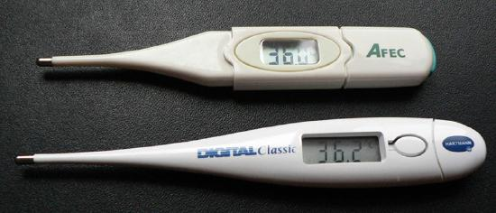
Although caution must be used in applying \(\rho = \rho_{0} \left( 1 + \alpha \Delta T \right) \) and \(R = R_{0} \left( 1+ \alpha \Delta T \right) \) for temperature changes greater than \(100^{\circ}C\), for tungsten the equations work reasonably well for very large temperature changes. What, then, is the resistance of the tungsten filament in the previous example if its temperature is increased from room temperature (\(20^{\circ}C\)) to a typical operating temperature of \(2850^{\circ}C\)?
This is a straightforward application of \(R = R_{0} \left(1+ \alpha \Delta T\right)\), since the original resistance of the filament was givent o eb \(R_{0} = 0.350 \Omega\), and the temperature change is \(\Delta T = 2830^{\circ}C\).
The hot resistance \(R\) is obtained by entering known values into the above equation:
This value is consistent with the headlight resistance example in 20.3.
PHET EXPLORATIONS: RESISTANCE IN A WIRE
Learn about the physics of resistance in a wire. Change its resistivity, length, and area to see how they affect the wire's resistance. The sizes of the symbols in the equation change along with the diagram of a wire.

1Values depend strongly on amounts and types of impurities
📖 OpenStax College Physics, Section 20.3. openstax.org · CC BY 4.0
- Calculate the power dissipated by a resistor and power supplied by a power supply.
- Calculate the cost of electricity under various circumstances.
Power is associated by many people with electricity. Knowing that power is the rate of energy use or energy conversion, what is the expression forelectric power? Power transmission lines might come to mind. We also think of lightbulbs in terms of their power ratings in watts. Let us compare a 25-W bulb with a 60-W bulb (Figure \(\PageIndex{1a}\).) Since both operate on the same voltage, the 60-W bulb must draw more current to have a greater power rating. Thus the 60-W bulb’s resistance must be lower than that of a 25-W bulb. If we increase voltage, we also increase power. For example, when a 25-W bulb that is designed to operate on 120 V is connected to 240 V, it briefly glows very brightly and then burns out. Precisely how are voltage, current, and resistance related to electric power?
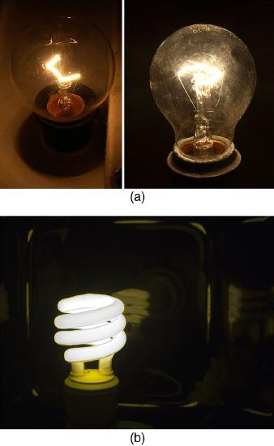
Figure:(a) Which of these lightbulbs, the 25-W bulb (upper left) or the 60-W bulb (upper right), has the higher resistance? Which draws more current? Which uses the most energy? Can you tell from the color that the 25-W filament is cooler? Is the brighter bulb a different color and if so why? (credits: Dickbauch, Wikimedia Commons; Greg Westfall, Flickr) (b) This compact fluorescent light (CFL) puts out the same intensity of light as the 60-W bulb, but at 1/4 to 1/10 the input power. (credit: dbgg1979, Flickr)
Electric energy depends on both the voltage involved and the charge moved. This is expressed most simply as \(PE = qV\), where \(q\) is the charge moved and \(V\) is the voltage (or more precisely, the potential difference the charge moves through). Power is the rate at which energy is moved, and so electric power is
Recognizing that current is \(I = q/t\) (note that \(\Delta t = t\) here), the expression for power becomes
Electric power (\(P\)) is simply the product of current times voltage. Power has familiar units of watts. Since the SI unit for potential energy (PE) is the joule, power has units of joules per second, or watts. Thus, \(1 A \cdot V = 1 W\). For example, cars often have one or more auxiliary power outlets with which you can charge a cell phone or other electronic devices. These outlets may be rated at 20 A, so that the circuit can deliver a maximum power \(P = IV = \left(20A\right) \left(12V\right) = 240W\). In some applications, electric power may be expressed as volt-amperes or even kilovolt-amperes ( \(1kA \cdot V = 1kW\) ).
To see the relationship of power to resistance, we combine Ohm’s law with \(P = IV\). Substituting Ohm Law (\(I = V/R\)) into Equation \ref{20.5.2} gives
Similarly, substituting \(V = IR\) gives
Three expressions for electric power are listed together here for convenience:
Note that the first equation is always valid, whereas the other two can be used only for resistors. In a simple circuit, with one voltage source and a single resistor, the power supplied by the voltage source and that dissipated by the resistor are identical. (In more complicated circuits, \(P\) can be the power dissipated by a single device and not the total power in the circuit.)
Different insights can be gained from the three different expressions for electric power. For example, \(P = V^{2} / R\) implies that the lower the resistance connected to a given voltage source, the greater the power delivered. Furthermore, since voltage is squared in \(P = V^{2} / R\), the effect of applying a higher voltage is perhaps greater than expected. Thus, when the voltage is doubled to a 25-W bulb, its power nearly quadruples to about 100 W, burning it out. If the bulb’s resistance remained constant, its power would be exactly 100 W, but at the higher temperature its resistance is higher, too.
(a) Consider the examples given in 20.3 and 20.4. Then find the power dissipated by the car headlight in these examples, both when it is hot and when it is cold.
For the hot headlight, we know voltage and current, so we can use \(P = IV\) to find the power. For the cold headlight, we know the voltage and resistance, so we can use \(P=V^{2}/R\) to find the power.
Entering the known values of current and voltage for the hot headlight, we obtain \[P = IV = \left(2.50 A\right)\left(12.0 V\right) = 30.0 W.\] The cold resistance was \(0.350 \Omega\), and so the power it uses when first switched on is
The 30 W dissipated by the hot headlight is typical. But the 411 W when cold is surprisingly higher. The initial power quickly decreases as the bulb’s temperature increases and its resistance increases.
(b) What current does it draw when cold?
The current when the bulb is cold can be found several different ways. We rearrange one of the power equations, \(P = I^{2}R\), and enter known values, obtaining
The cold current is remarkably higher than the steady-state value of 2.50 A, but the current will quickly decline to that value as the bulb’s temperature increases. Most fuses and circuit breakers (used to limit the current in a circuit) are designed to tolerate very high currents briefly as a device comes on. In some cases, such as with electric motors, the current remains high for several seconds, necessitating special “slow blow” fuses.
The more electric appliances you use and the longer they are left on, the higher your electric bill. This familiar fact is based on the relationship between energy and power. You pay for the energy used. Since \(P = E/t\), we see that \[E = Pt\label{20.5.6}\] is the energy used by a device using power \(P\) for a time interval \(t\). For example, the more lightbulbs burning, the greater \(P\) used; the longer they are on, the greater \(t\) is. The energy unit on electric bills is the killowatt-hour ( \(kW \cdot h\) ), consistent with the relationship \(E = Pt\). It is easy to estimate the cost of operating electric appliances if you have some idea of their power consumption rate in watts or kilowatts, the time they are on in hours, and the cost per kilowatt-hour for your electric utility. Kilowatt-hours, like all other specialized energy units such as food calories, can be converted to joules. You can prove to yourself that \(1 kW \cdot h = 3.6 \times 10^{6} J\).
The electric energy ( \(E\) ) used can be reduced either by reducing the time of use or by reducing the power consumption of that appliance or fixture. This will not only reduce the cost, but it will also result in a reduced impact on the environment. Improvements to lighting are some of the fastest ways to reduce the electrical energy used in a home or business. About 20% of a home’s use of energy goes to lighting, while the number for commercial establishments is closer to 40%. Fluorescent lights are about four times more efficient than incandescent lights—this is true for both the long tubes and the compact fluorescent lights (CFL). (See Figure 1b.) Thus, a 60-W incandescent bulb can be replaced by a 15-W CFL, which has the same brightness and color. CFLs have a bent tube inside a globe or a spiral-shaped tube, all connected to a standard screw-in base that fits standard incandescent light sockets. (Original problems with color, flicker, shape, and high initial investment for CFLs have been addressed in recent years.) The heat transfer from these CFLs is less, and they last up to 10 times longer. The significance of an investment in such bulbs is addressed in the next example. New white LED lights (which are clusters of small LED bulbs) are even more efficient (twice that of CFLs) and last 5 times longer than CFLs. However, their cost is still high.
Making Connections: Energy, Power, and Time
The relationship \(E = Pt\) is one that you will find useful in many different contexts. The energy your body uses in exercise is related to the power level and duration of your activity, for example. The amount of heating by a power source is related to the power level and time it is applied. Even the radiation dose of an X-ray image is related to the power and time of exposure.
(a) If the cost of electricity in your area is 12 cents per kWh, what is the total cost (capital plus operation) of using a 60-W incandescent bulb for 1000 hours (the lifetime of that bulb) if the bulb cost 25 cents?
To find the operating cost, we first find the energy used in kilowatt-hours and then multiply by the cost per kilowatt-hour.
The energy used in kilowatt-hours is found by entering the power and time into the expression for energy: \[E = Pt = \left(60 W\right)\left(1000 h\right) = 60,000 W \cdot h.\] In kilowatt-hours, this is \]E = 60.0 kW \cdot h.\] Now the electricity cost is \[cost = \left(60.0 kW \cdot h\right)\left($0.12/kW \cdot h\right) = $7.20.\] The total cost will be $7.20 for 1000 hours (about one-half year at 5 hours per day).
(b) If we replace this bulb with a compact fluorescent light that provides the same light output, but at one-quarter the wattage, and which costs $1.50 but lasts 10 times longer (10,000 hours), what will that total cost be?
Since the CFL uses only 15 W and not 60 W, the electricity cost will be $7.20/4 = $1.80. The CFL will last 10 times longer than the incandescent, so that the investment cost will be 1/10 of the bulb cost for that time period of use, or 0.1($1.50) = $0.15. Therefore, the total cost will be $1.95 for 1000 hours.
Therefore, it is much cheaper to use the CFLs, even though the initial investment is higher. The increased cost of labor that a business must include for replacing the incandescent bulbs more often has not been figured in here.
Making Connections: Take-Home Experiment—Electrical Energy Use Inventory
1) Make a list of the power ratings on a range of appliances in your home or room. Explain why something like a toaster has a higher rating than a digital clock. Estimate the energy consumed by these appliances in an average day (by estimating their time of use). Some appliances might only state the operating current. If the household voltage is 120 V, then use \(P = IV\).
2) Check out the total wattage used in the rest rooms of your school’s floor or building. (You might need to assume the long fluorescent lights in use are rated at 32 W.) Suppose that the building was closed all weekend and that these lights were left on from 6 p.m. Friday until 8 a.m. Monday. What would this oversight cost? How about for an entire year of weekends?
📖 OpenStax College Physics, Section 20.4. openstax.org · CC BY 4.0
- Explain the differences and similarities between AC and DC current.
- Calculate rms voltage, current, and average power.
- Explain why AC current is used for power transmission.
Most of the examples dealt with so far, and particularly those utilizing batteries, have constant voltage sources. Once the current is established, it is thus also a constant.Direct current(DC) is the flow of electric charge in only one direction. It is the steady state of a constant-voltage circuit. Most well-known applications, however, use a time-varying voltage source.Alternating current(AC) is the flow of electric charge that periodically reverses direction. If the source varies periodically, particularly sinusoidally, the circuit is known as an alternating current circuit. Examples include the commercial and residential power that serves so many of our needs. Figure shows graphs of voltage and current versus time for typical DC and AC power. The AC voltages and frequencies commonly used in homes and businesses vary around the world.
![Part a shows a graph of voltage V and current I versus time for a D C source. The time is along the x axis and V and I are along the y axis. The graph shows that the voltage V sub D C and the current I sub D C do not vary with time. Part b shows the variation of voltage V and current I with time for an A C source. The time is along the horizontal axis and V and I are along the vertical axis. The graph for I is a progressing sine wave with a peak value I sub zero on the positive y axis and negative I sub zero on the negative y axis. The graph for V is a progressing sine wave with a higher amplitude than the current curve with a peak value V sub zero on the positive y axis and negative V sub zero on the negative y axis. The peak values of the voltage and current sine waves occur at the same time because they are in phase.](images/ch20/fig20-15-part-a-shows-a-graph-of-voltage-v-and-cu.jpg)
Figure shows a schematic of a simple circuit with an AC voltage source. The voltage between the terminals fluctuates as shown, with theAC voltagegiven by \[V = V_{0} sin 2 \pi ft, \label{20.6.1}\] where \(V\) is the voltage at time \(t\), \(V_{0}\), \(V_{0}\) is the peak voltage, and \(f\) is the frequency in hertz. For this simple resistance circuit, \(I = V/R\), and so theAC currentis
where \(I\) is the current at time \(t\), and \(I_{0} = V_{0} / R\) is the peak current. For this example, the voltage and current are said to be in phase, as seen in Figure \(\PageIndex{1b}\).
![The potential difference variation of an alternating current voltage source with time is shown as a progressing sine wave. The voltage is shown along the vertical axis and the time is along the horizontal axis. Circuit diagrams show that current flowing in one direction corresponds to positive values of the voltage sine wave. Current flowing in the opposite direction in the circuit corresponds to negative values of the voltage sine wave. The maximum value of the voltage sine wave is plus V sub zero. The minimum value of the voltage sine wave is minus V sub zero.](images/ch20/fig20-16-the-potential-difference-variation-of-an.jpg)
Current in the resistor alternates back and forth just like the driving voltage, since \(I = V / R\). If the resistor is a fluorescent light bulb, for example, it brightens and dims 120 times per second as the current repeatedly goes through zero. A 120-Hz flicker is too rapid for your eyes to detect, but if you wave your hand back and forth between your face and a fluorescent light, you will see a stroboscopic effect evidencing AC. The fact that the light output fluctuates means that the power is fluctuating. The power supplied is \(P = IV\). Using the expressions for \(I\) and \(V\) above, we see that the time dependence of power is \(P = I_{0}V_{0}sin^{2}2\pi ft\), as shown in Figure .
![A graph showing the variation of power P with time t. The power is along the vertical axis and time is along the horizontal axis. The curve is a sine wave starting at the origin on the horizontal axis and having the crests and troughs both above the positive horizontal axis. The maximum value of power is given by the peak value, which is the product of I sub zero and V sub zero. The average power is indicated by a dotted line through the center of the wave parallel to the horizontal axis with a value half of the product of I sub zero and V sub zero.](images/ch20/fig20-17-a-graph-showing-the-variation-of-power-p.jpg)
Making Connections: Take-Home Experiment—AC/DC Lights
Wave your hand back and forth between your face and a fluorescent light bulb. Do you observe the same thing with the headlights on your car? Explain what you observe.Warning: Do not look directly at very bright light.
We are most often concerned with average power rather than its fluctuations—that 60-W light bulb in your desk lamp has an average power consumption of 60 W, for example. As illustrated in Figure 3, the average power \(P_{ave}\) is \[P_{ave} = \frac{1}{2}I_{0}V_{0}. \label{20.6.3}\] This is evident from the graph, since the areas above and below the \(\left(1/2\right)I_{0}V_{0}\) line are equal, but it can also be proven using trigonometric identities. Similarly, we define an average orrms current\(I_{rms}\) and average orrms voltage\(V_{rms}\) to be, respectively,
where rms stands for root mean square, a particular kind of average. In general, to obtain a root mean square, the particular quantity is squared, its mean (or average) is found, and the square root is taken. This is useful for AC, since the average value is zero. Now, \[P_{ave} = I_{rms}V_{rms}, \label{20.6.6}\] which gives
as stated above. It is standard practice to quote \(I_{rms}\), \(V_{rms}\), and \(P_{ave}\) rather than the peak values. For example, most household electricity is 120 V AC, which means that \(V_{rms}\) is 120 V. The common 10-A circuit breaker will interrupt a sustained \(I_{rms}\) greater than 10 A. Your 1.0-kW microwave oven consumes \(P_{ave} = 1.0 kW\), and so on. You can think of these rms and average values as the equivalent DC values for a simple resistive circuit.
To summarize, when dealing with AC, Ohm’s law and the equations for power are completely analogous to those for DC, but rms and average values are used for AC. Thus, for AC, Ohm’s law is written
The various expressions for AC power \(P_{ave}\) are
(a) What is the value of the peak voltage for 120-V AC power?
We are told that \(V_{rms}\) is 120V and \(P_{ave}\) is 60.0 W. We can use \(V_{rms} = \frac{V_{0}}{\sqrt{2}}\) to find the peak voltage, and we can manipulate the definition of power to find the peak power from the given average power.
This means that the AC voltage swings from 170 V to \(-170 V\) and back 60 times every second. An equivalent DC voltage is a constant 120 V.
(b) What is the peak power consumption rate of a 60.0-W AC light bulb?
Peak power is peak current times peak voltage. Thus, \[P_{0} = I_{0}V_{0} = 2\left(\frac{1}{2} I_{0} V_{0} \right) = 2P_{ave}.\] We know the average power is 60.0 W, and so \[P_{0} = 2\left(60.0 W\right) = 120 W.\]
So the power swings from zero to 120 W one hundred twenty times per second (twice each cycle), and the power averages 60 W.
Most large power-distribution systems are AC. Moreover, the power is transmitted at much higher voltages than the 120-V AC (240 V in most parts of the world) we use in homes and on the job. Economies of scale make it cheaper to build a few very large electric power-generation plants than to build numerous small ones. This necessitates sending power long distances, and it is obviously important that energy losses en route be minimized. High voltages can be transmitted with much smaller power losses than low voltages, as we shall see. (See Figure 4.) For safety reasons, the voltage at the user is reduced to familiar values. The crucial factor is that it is much easier to increase and decrease AC voltages than DC, so AC is used in most large power distribution systems.
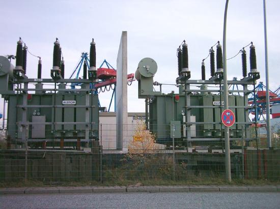
(a) What current is needed to transmit 100 MW of power at 200 kV?
We are given \(P_{ave} = 100 MW\), \(V_{rms} = 200 kV\), and the resistance of the lines is \(R = 1.00 \Omega\). Using these givens, we can find the current flowing (from \(P = IV\) ) and then the power dissipated in the lines (\(P = I^{2}R\)), and we take the ratio to the total power transmitted.
To find the current, we rearrange the relationship \(P_{ave} = I_{rms}V_{rms}\) and substitute known values. This gives \[I_{rms} = \frac{P_{ave}}{V_{rms}} = \frac{100 \times 10^{6} W}{200 \times 10^{3} V} = 500A .\]
(b) What is the power dissipated by the transmission lines if they have a resistance of \(1.00 \Omega\)?
Knowing the current and given the resistance of the lines, the power dissipated in them is found from \(P_{ave} = I^{2}_{rms}R.\). Substituting the known value gives \[P_{ave} = I^{2}_{rms}R = \left(500 A\right)^{2} \left(1.00 \Omega\right) = 250 kW.\]
(c) What percentage of the power is lost in the transmission lines?
The percent loss is the ratio of this lost power to the total or input power, multiplied by 100:
One-fourth of a percent is an acceptable loss. Note that if 100 MW of power had been transmitted at 25 kV, then a current of 4000 A would have been needed. This would result in a power loss in the lines of 16.0 MW, or 16.0% rather than 0.250%. The lower the voltage, the more current is needed, and the greater the power loss in the fixed-resistance transmission lines. Of course, lower-resistance lines can be built, but this requires larger and more expensive wires. If superconducting lines could be economically produced, there would be no loss in the transmission lines at all. But, as we shall see in a later chapter, there is a limit to current in superconductors, too. In short, high voltages are more economical for transmitting power, and AC voltage is much easier to raise and lower, so that AC is used in most large-scale power distribution systems.
It is widely recognized that high voltages pose greater hazards than low voltages. But, in fact, some high voltages, such as those associated with common static electricity, can be harmless. So it is not voltage alone that determines a hazard. It is not so widely recognized that AC shocks are often more harmful than similar DC shocks. Thomas Edison thought that AC shocks were more harmful and set up a DC power-distribution system in New York City in the late 1800s. There were bitter fights, in particular between Edison and George Westinghouse and Nikola Tesla, who were advocating the use of AC in early power-distribution systems. AC has prevailed largely due to transformers and lower power losses with high-voltage transmission.
PHET EXPLORATIONS: GENERATOR
Generate electricity with a bar magnet! Discover the physics behind the phenomena by exploring magnets and how you can use them to make a bulb light.
Figure :Generator
📖 OpenStax College Physics, Section 20.5. openstax.org · CC BY 4.0
- Define thermal hazard, shock hazard, and short circuit.
- Explain what effects various levels of current have on the human body.
There are two known hazards of electricity—thermal and shock. Athermal hazardis one where excessive electric power causes undesired thermal effects, such as starting a fire in the wall of a house. Ashock hazardoccurs when electric current passes through a person. Shocks range in severity from painful, but otherwise harmless, to heart-stopping lethality. This section considers these hazards and the various factors affecting them in a quantitative manner. Electrical Safety: Systems and Devices will consider systems and devices for preventing electrical hazards.
Electric power causes undesired heating effects whenever electric energy is converted to thermal energy at a rate faster than it can be safely dissipated. A classic example of this is theshort circuit, a low-resistance path between terminals of a voltage source. An example of a short circuit is shown in Figure 1. Insulation on wires leading to an appliance has worn through, allowing the two wires to come into contact. Such an undesired contact with a high voltage is called ashort.Since the resistance of the short, \(r\), is very small, the power dissipated in the short, \(P=V^{2}/r\), is very large. for example, if \(V\) is 120 V and \(r\) is \(0.100 \Omega\), then the power is 144kW,muchgreater than that used by a typical household appliance. Thermal energy delivered at this rate will very quickly raise the temperature of surrounding materials, melting or perhaps igniting them.
![Part a shows an electric toaster of resistance capital R connected to an A C voltage source. The wires used to connect the toaster to the supply are worn out in one place, allowing them to come into contact with an undesired, lower resistance path, symbolized by lowercase r. Part b of the figure represents the circuit diagram for the electric connection described in part a. The voltage source is connected to two paths in parallel: the toaster with resistance capital R, and the undesired lower resistance path, symbolized by lowercase r.](images/ch20/fig20-19-part-a-shows-an-electric-toaster-of-resi.jpg)
One particularly insidious aspect of a short circuit is that its resistance may actually be decreased due to the increase in temperature. This can happen if the short creates ionization. These charged atoms and molecules are free to move and, thus, lower the resistance \(r\). Since \(P=V^{2}/r\), the power dissipated in the short rises, possibly causing more ionization, more power, and so on. High voltages, such as the 480-V AC used in some industrial applications, lend themselves to this hazard, because higher voltages create higher initial power production in a short.
Another serious, but less dramatic, thermal hazard occurs when wires supplying power to a user are overloaded with too great a current. As discussed in the previous section, the power dissipated in the supply wires is \(P = I^{2}R_{W}\), where \(R_{W}\) is the resistance of the wires and \(I\) the current flowing through them. If either \(I\) or \(R_{W}\) is too large, the wires overheat. For example, a worn appliance cord (with some of its braided wires broken) may have \(R_{W} = 2.00 \Omega\) rather than the \(0.100 \Omega\) it should be. If 10.0 A of current passes through the cord, then \(P = I^{2}R_{W} = 200 W\) is dissipated in the cord—much more than is safe. Similarly, if a wire with a \(0.100 - \Omega\) resistance is meant to carry a few amps, but is instead carrying 100 A, it will severely overheat. The power dissipated in the wire will in that case be \(P= 1000 W\). Fuses and circuit breakers are used to limit excessive currents. (See Figure 2 and Figure 3.) Each device opens the circuit automatically when a sustained current exceeds safe limits.
![Part a of the figure shows an electric fuse with metal having low melting point enclosed in a case with wires leading to the circuit and voltage source. There is a viewing window in the fuse casing. Part b shows a circuit breaker. There is a movable metal strip at one end from which a connector to the circuit is attached at a fixed contact point. There is a compressed spring and switch gear attached adjacent to each other at the other end of the movable metal strip. The movable metallic strip has a bimetallic strip attached perpendicular to it at its center. At the opposite end of the bimetallic strip, there is a connector to the voltage source.](images/ch20/fig20-20-part-a-of-the-figure-shows-an-electric-f.jpg)
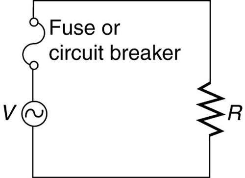
Fuses and circuit breakers for typical household voltages and currents are relatively simple to produce, but those for large voltages and currents experience special problems. For example, when a circuit breaker tries to interrupt the flow of high-voltage electricity, a spark can jump across its points that ionizes the air in the gap and allows the current to continue flowing. Large circuit breakers found in power-distribution systems employ insulating gas and even use jets of gas to blow out such sparks. Here AC is safer than DC, since AC current goes through zero 120 times per second, giving a quick opportunity to extinguish these arcs.
Electrical currents through people produce tremendously varied effects. An electrical current can be used to block back pain. The possibility of using electrical current to stimulate muscle action in paralyzed limbs, perhaps allowing paraplegics to walk, is under study. TV dramatizations in which electrical shocks are used to bring a heart attack victim out of ventricular fibrillation (a massively irregular, often fatal, beating of the heart) are more than common. Yet most electrical shock fatalities occur because a current put the heart into fibrillation. A pacemaker uses electrical shocks to stimulate the heart to beat properly. Some fatal shocks do not produce burns, but warts can be safely burned off with electric current (though freezing using liquid nitrogen is now more common). Of course, there are consistent explanations for these disparate effects. The major factors upon which the effects of electrical shock depend are
The table below gives the effects of electrical shocks as a function of current for a typical accidental shock. The effects are for a shock that passes through the trunk of the body, has a duration of 1 s, and is caused by 60-Hz power.
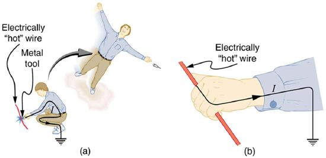
| Current (mA) | Effect |
|---|---|
| 1 | Threshold of sensation |
| 5 | Maximum harmless current |
| 10-20 | Onset of sustained muscular contraction; cannot let go for duration of shock; contraction of chest muscles may stop breathing during shock |
| 50 | Onset of pain |
| 100-300+ | Ventricular fibrillation possible; often fatal |
| 300 | Onset of burns depending on concentration of current |
| 6000 (6A) | Onset of sustained ventricular contraction and respiratory paralysis; both cease when shock ends; heartbeat may return to normal; used to defibrillate the heart |
Effects of Electrical Shock as a Function of Current
Our bodies are relatively good conductors due to the water in our bodies. Given that larger currents will flow through sections with lower resistance (to be further discussed in the next chapter), electric currents preferentially flow through paths in the human body that have a minimum resistance in a direct path to earth. The earth is a natural electron sink. Wearing insulating shoes, a requirement in many professions, prohibits a pathway for electrons by providing a large resistance in that path. Whenever working with high-power tools (drills), or in risky situations, ensure that you do not provide a pathway for current flow (especially through the heart).
Very small currents pass harmlessly and unfelt through the body. This happens to you regularly without your knowledge. The threshold of sensation is only 1 mA and, although unpleasant, shocks are apparently harmless for currents less than 5 mA. A great number of safety rules take the 5-mA value for the maximum allowed shock. At 10 to 20 mA and above, the current can stimulate sustained muscular contractions much as regular nerve impulses do. People sometimes say they were knocked across the room by a shock, but what really happened was that certain muscles contracted, propelling them in a manner not of their own choosing. (See Figure 4a.) More frightening, and potentially more dangerous, is the “can’t let go” effect illustrated in Figure 4b.
The muscles that close the fingers are stronger than those that open them, so the hand closes involuntarily on the wire shocking it. This can prolong the shock indefinitely. It can also be a danger to a person trying to rescue the victim, because the rescuer’s hand may close about the victim’s wrist. Usually the best way to help the victim is to give the fist a hard knock/blow/jar with an insulator or to throw an insulator at the fist. Modern electric fences, used in animal enclosures, are now pulsed on and off to allow people who touch them to get free, rendering them less lethal than in the past.
Greater currents may affect the heart. Its electrical patterns can be disrupted, so that it beats irregularly and ineffectively in a condition called “ventricular fibrillation.” This condition often lingers after the shock and is fatal due to a lack of blood circulation. The threshold for ventricular fibrillation is between 100 and 300 mA. At about 300 mA and above, the shock can cause burns, depending on the concentration of current—the more concentrated, the greater the likelihood of burns.
Very large currents cause the heart and diaphragm to contract for the duration of the shock. Both the heart and breathing stop. Interestingly, both often return to normal following the shock. The electrical patterns on the heart are completely erased in a manner that the heart can start afresh with normal beating, as opposed to the permanent disruption caused by smaller currents that can put the heart into ventricular fibrillation. The latter is something like scribbling on a blackboard, whereas the former completely erases it. TV dramatizations of electric shock used to bring a heart attack victim out of ventricular fibrillation also show large paddles. These are used to spread out current passed through the victim to reduce the likelihood of burns.
Current is the major factor determining shock severity (given that other conditions such as path, duration, and frequency are fixed, such as in the table and preceding discussion). A larger voltage is more hazardous, but since \(I = V/R\), the severity of the shock depends on the combination of voltage and resistance. For example, a person with dry skin has a resistance of about \(200 k\Omega\). If he comes into contact with 120-V AC, a current \(I = (120 V)/(200 k\Omega) = .6mA\) passes harmlessly through him. The same person soaking wet may have a resistance of \(10.0 k\Omega\) and the same 120 V will produce a current of 12 mA—above the “can’t let go” threshold and potentially dangerous.
Most of the body’s resistance is in its dry skin. When wet, salts go into ion form, lowering the resistance significantly. The interior of the body has a much lower resistance than dry skin because of all the ionic solutions and fluids it contains. If skin resistance is bypassed, such as by an intravenous infusion, a catheter, or exposed pacemaker leads, a person is renderedmicroshock sensitive. In this condition, currents about 1/1000 those listed in the table above produce similar effects. During open-heart surgery, currents as small as \(20 \mu A\) can be used to still the heart. Stringent electrical safety requirements in hospitals, particularly in surgery and intensive care, are related to the doubly disadvantaged microshock-sensitive patient. The break in the skin has reduced his resistance, and so the same voltage causes a greater current, and a much smaller current has a greater effect.
![The graph of average values for the threshold of sensation and the Can't let go current as a function of frequency, with current in milliamperes verses frequency in hertz. The current is plotted along the vertical axis and frequency along the horizontal axis. The plot has two curves. The curve for Can't let go current starts off at a value nearly eighteen milliamps on the vertical axis. The curve is smooth and dips until frequency equals about one hundred hertz and then rises for values of frequency above one hundred hertz. The curve for Threshold of sensation current starts off at a value nearly four milliamps on the vertical axis. The curve is smooth and dips until frequency equals about one hundred hertz and then rises for values of frequency above one hundred hertz. The maximum value of current reached for this curve is nearly equal to the initial value for the Can't let go current curve. The Threshold of sensation curve lies below the curve for Can't let go current.](images/ch20/fig20-23-the-graph-of-average-values-for-the-thre.jpg)
Factors other than current that affect the severity of a shock are its path, duration, and AC frequency. Path has obvious consequences. For example, the heart is unaffected by an electric shock through the brain, such as may be used to treat manic depression. And it is a general truth that the longer the duration of a shock, the greater its effects. Figure 5 presents a graph that illustrates the effects of frequency on a shock. The curves show the minimum current for two different effects, as a function of frequency. The lower the current needed, the more sensitive the body is at that frequency. Ironically, the body is most sensitive to frequencies near the 50- or 60-Hz frequencies in common use. The body is slightly less sensitive for DC (\(f = 0\)), mildly confirming Edison’s claims that AC presents a greater hazard. At higher and higher frequencies, the body becomes progressively less sensitive to any effects that involve nerves. This is related to the maximum rates at which nerves can fire or be stimulated. At very high frequencies, electrical current travels only on the surface of a person. Thus a wart can be burned off with very high frequency current without causing the heart to stop. (Do not try this at home with 60-Hz AC!) Some of the spectacular demonstrations of electricity, in which high-voltage arcs are passed through the air and over people’s bodies, employ high frequencies and low currents. (See Figure 6.) Electrical safety safety devices and techniques are discussed in detail in Electrical Safety: Systems and Devices.
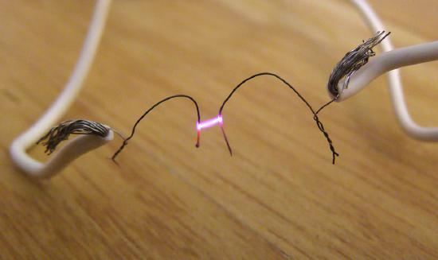
1For an average male shocked through trunk of body for 1 s by 60-Hz AC. Values for females are 60–80% of those listed.
📖 OpenStax College Physics, Section 20.6. openstax.org · CC BY 4.0
- Explain the process by which electric signals are transmitted along a neuron.
- Explain the effects myelin sheaths have on signal propagation.
- Explain what the features of an ECG signal indicate.
Electric currents in the vastly complex system of billions of nerves in our body allow us to sense the world, control parts of our body, and think. These are representative of the three major functions of nerves. First, nerves carry messages from our sensory organs and others to the central nervous system, consisting of the brain and spinal cord. Second, nerves carry messages from the central nervous system to muscles and other organs. Third, nerves transmit and process signals within the central nervous system. The sheer number of nerve cells and the incredibly greater number of connections between them makes this system the subtle wonder that it is.Nerve conductionis a general term for electrical signals carried by nerve cells. It is one aspect ofbioelectricity, or electrical effects in and created by biological systems.
Nerve cells, properly calledneurons, look different from other cells—they have tendrils, some of them many centimeters long, connecting them with other cells (Figure . Signals arrive at the cell body acrosssynapsesor throughdendrites, stimulating the neuron to generate its own signal, sent along its longaxonto other nerve or muscle cells. Signals may arrive from many other locations and be transmitted to yet others, conditioning the synapses by use, giving the system its complexity and its ability to learn.
![The figure describes a neuron. The neuron has a cell body with a nucleus at the center represented by a circle. The cell body is surrounded by many thin, branching projections called dendrites, represented by ribbon-like structures. The ends of some of these dendrites are shown connected to the ends of dendrites from another neuron at junctions called synapses. The cell body of the neuron also has a long projection called an axon, represented as a vertical tube reaching downward and ending with thin projections inside a muscle fiber, represented by a tubular structure. The ends of the axon are called nerve endings. The axon is covered with myelin sheaths, each of which is one millimeter in length. The myelin sheaths are separated by gaps, called nodes of Ranvier, each of length zero point zero zero one millimeter.](images/ch20/fig20-25-the-figure-describes-a-neuron-the-neuron.jpg)
The method by which these electric currents are generated and transmitted is more complex than the simple movement of free charges in a conductor, but it can be understood with principles already discussed in this text. The most important of these are the Coulomb force and diffusion.
Figure illustrates how a voltage (potential difference) is created across the cell membrane of a neuron in its resting state. This thin membrane separates electrically neutral fluids having differing concentrations of ions, the most important varieties being \(Na^{+}\), \(K^{+}\), and \(Cl^{-}\). (these are sodium, potassium, and chlorine ions with single plus or minus charges as indicated). As discussed inMolecular Transport Phenomena: Diffusion, Osmosis, and Related Processes, free ions will diffuse from a region of high concentration to one of low concentration. But the cell membrane issemipermeable, meaning that some ions may cross it while others cannot. In its resting state, the cell membrane is permeable to \(K^{+}\) and \(Cl^{-}\), and impermeable to \(Na^{+}\). Diffusion of \(K^{+}\) and \(Cl^{-}\) thus creates the layers of positive and negative charge on the outside and inside of the membrane. The Coulomb force prevents the ions from diffusing across in their entirety. Once the charge layer has built up, the repulsion of like charges prevents more from moving across, and the attraction of unlike charges prevents more from leaving either side. The result is two layers of charge right on the membrane, with diffusion being balanced by the Coulomb force. A tiny fraction of the charges move across and the fluids remain neutral (other ions are present), while a separation of charge and a voltage have been created across the membrane.
![The semipermeable membrane of a cell is shown, with different concentrations of potassium cations, sodium cations, and chloride anions inside and outside the cell. The ions are represented by small, colored circles. In its resting state, the cell membrane is permeable to potassium and chloride ions, but it is impermeable to sodium ions. By diffusion, potassium cations travel out of the cell, going through the cell membrane and forming a layer of positive charge on the outer surface of the membrane. By diffusion, chloride anions go into the cell, going through the cell membrane and forming a layer of negative charge on the inner surface of the membrane. As a result, a voltage is set up across the cell membrane. The Coulomb force prevents all the ions from crossing the membrane.](images/ch20/fig20-26-the-semipermeable-membrane-of-a-cell-is-.jpg)
![This is a graphical representation of a pulse of voltage, or action potential, inside a nerve cell. The voltage in millivolts is plotted along the vertical axis and the time in milliseconds is plotted along the horizontal axis. Initially, between zero and about two point eight milliseconds, the voltage is a constant at about minus ninety millivolts, corresponding to the resting state. Above this section of the graph, a window shows a small cross-section of the cell membrane, with a positively charged outer surface, a negatively charged inner surface, and no ions moving across the membrane. Between two point eight and four point two milliseconds, the voltage increases to a peak of fifty millivolts, corresponding to depolarization of the membrane. A window above this section shows sodium cations crossing the membrane, from outside to inside the cell, so that the membrane's inner surface acquires a positive charge and its outer surface has a negative charge. Between about four point two and about five point five milliseconds, the voltage drops to a low of about minus one hundred and ten millivolts, corresponding to repolarization of the membrane. A window above this section shows potassium cations crossing the membrane, from inside to outside the cell, so that the membrane's outer surface again acquires a positive charge and its inner surface has a negative charge. After that, the voltage rises slightly, going back to a constant of about minus ninety millivolts, corresponding to the resting state. This movement of sodium and potassium ions across the membrane is called active transport, and long-term active transport is shown in a window above the final part of the curve.](images/ch20/fig20-27-this-is-a-graphical-representation-of-a-.jpg)
The separation of charge creates a potential difference of 70 to 90 mV across the cell membrane. While this is a small voltage, the resulting electric field (\(E = V/d\)) across the only 8-nm-thick membrane is immense (on the order of 11 MV/m!) and has fundamental effects on its structure and permeability. Now, if the exterior of a neuron is taken to be at 0 V, then the interior has aresting potentialof about –90 mV. Such voltages are created across the membranes of almost all types of animal cells but are largest in nerve and muscle cells. In fact, fully 25% of the energy used by cells goes toward creating and maintaining these potentials.
Electric currents along the cell membrane are created by any stimulus that changes the membrane’s permeability. The membrane thus temporarily becomes permeable to \(Na^{+}\), which then rushes in, driven both by diffusion and the Coulomb force. This inrush of \(Na^{+}\) first neutralizes the inside membrane, ordepolarizesit, and then makes it slightly positive. The depolarization causes the membrane to again become impermeable to \(Na^{+}\), and the movement of \(K^{+}\) quickly returns the cell to its resting potential, orrepolarizesit. This sequence of events results in a voltage pulse, called theaction potential. (See Figure 3.) Only small fractions of the ions move, so that the cell can fire many hundreds of times without depleting the excess concentrations of \(Na^{+}\) and \(K^{+}\). Eventually, the cell must replenish these ions to maintain the concentration differences that create bioelectricity. This sodium-potassium pump is an example ofactive transport, wherein cell energy is used to move ions across membranes against diffusion gradients and the Coulomb force.
The action potential is a voltage pulse at one location on a cell membrane. How does it get transmitted along the cell membrane, and in particular down an axon, as a nerve impulse? The answer is that the changing voltage and electric fields affect the permeability of the adjacent cell membrane, so that the same process takes place there. The adjacent membrane depolarizes, affecting the membrane further down, and so on, as illustrated in Figure . Thus the action potential stimulated at one location triggers anerve impulsethat moves slowly (about 1 m/s) along the cell membrane.
![The figure describes the propagation of an action potential, or voltage pulse, along a cell membrane. The cell membrane, represented by a horizontal, blue strip, is shown in five stages, with the electrical signal moving along its length from left to right. Initially, the membrane is in the resting state, with a uniform distribution of positive charges along the outer surface and negative charges along the inner surface. A sodium cation is shown outside the cell, and a potassium cation is shown inside the cell. A small part of the membrane near the left end receives a stimulus, making that part permeable to sodium ions. In the second stage, sodium ions cross the membrane in that area, represented by a white opening in the membrane. The charge distribution in that section of the membrane is reversed; this process is called depolarization. At the same time, an adjacent part of the membrane is stimulated. In the third stage, the depolarized area undergoes repolarization, with potassium ions crossing the membrane from inside to outside the cell. Repolarization is represented by a box containing tiny triangles. At the same time, sodium ions enter the cell through the adjacent area that was stimulated in the second stage. As the cycle is repeated, the electrical signal moves along the membrane, from left to right.](images/ch20/fig20-28-the-figure-describes-the-propagation-of-.jpg)
Some axons, like that in Figure , are sheathed withmyelin, consisting of fat-containing cells. Figure shows an enlarged view of an axon having myelin sheaths characteristically separated by unmyelinated gaps (called nodes of Ranvier). This arrangement gives the axon a number of interesting properties. Since myelin is an insulator, it prevents signals from jumping between adjacent nerves (cross talk). Additionally, the myelinated regions transmit electrical signals at a very high speed, as an ordinary conductor or resistor would. There is no action potential in the myelinated regions, so that no cell energy is used in them. There is an \(IR\) signal loss in the myelin, but the signal is regenerated in the gaps, where the voltage pulse triggers the action potential at full voltage. So a myelinated axon transmits a nerve impulse faster, with less energy consumption, and is better protected from cross talk than an unmyelinated one. Not all axons are myelinated, so that cross talk and slow signal transmission are a characteristic of the normal operation of these axons, another variable in the nervous system.
![The figure describes the propagation of a nerve impulse, or voltage pulse, down a myelinated axon, from left to right. A cross-section of the axon is shown as a long, horizontally oriented rectangular strip, with a membrane on each side. The axon is covered with myelin sheaths separated by gaps known as nodes of Ranvier. Three gaps are shown. Most of the inner surface of the membrane is negatively charged, and the outer surface is positively charged. The gap on the left is labeled as depolarized, where the charge distribution along the membrane surface is reversed. As the voltage pulse moves from left to right through the first myelinated region, it loses voltage. The gap in the middle, labeled as depolarizing, shows sodium cations crossing the membrane from the outside to the inside of the axon. This regenerates the voltage pulse, which continues to move along the axon. The third gap is labeled as still polarized, because the signal has yet to reach that gap.](images/ch20/fig20-29-the-figure-describes-the-propagation-of-.jpg)
The degeneration or destruction of the myelin sheaths that surround the nerve fibers impairs signal transmission and can lead to numerous neurological effects. One of the most prominent of these diseases comes from the body’s own immune system attacking the myelin in the central nervous system—multiple sclerosis. MS symptoms include fatigue, vision problems, weakness of arms and legs, loss of balance, and tingling or numbness in one’s extremities (neuropathy). It is more apt to strike younger adults, especially females. Causes might come from infection, environmental or geographic affects, or genetics. At the moment there is no known cure for MS.
Most animal cells can fire or create their own action potential. Muscle cells contract when they fire and are often induced to do so by a nerve impulse. In fact, nerve and muscle cells are physiologically similar, and there are even hybrid cells, such as in the heart, that have characteristics of both nerves and muscles. Some animals, like the infamous electric eel (Figure ), use muscles ganged so that their voltages add in order to create a shock great enough to stun prey.
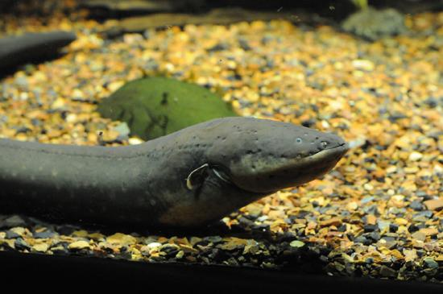
Just as nerve impulses are transmitted by depolarization and repolarization of adjacent membrane, the depolarization that causes muscle contraction can also stimulate adjacent muscle cells to depolarize (fire) and contract. Thus, a depolarization wave can be sent across the heart, coordinating its rhythmic contractions and enabling it to perform its vital function of propelling blood through the circulatory system. Figure is a simplified graphic of a depolarization wave spreading across the heart from thesinoarterial (SA) node, the heart's natural pacemaker.
![The figure shows that the charge distribution on the outer surface of the heart changes from positive to negative during depolarization. This wave of depolarization, spreading from the upper right toward the lower left of the heart, is represented by a vector pointing in the direction of the wave. The components of this vector are measured by placing electrodes on the patient's chest. The figure shows three electrodes, labeled R A, L A, and L L, placed to form a triangle around the heart. The electrode R A is close to the right atrium, L A is close to the left atrium, and L L is just below the heart. R A and L A form a pair called lead one, R A and L L form a second pair called lead two, and L A and L L form a third pair called lead three. Each pair of electrodes measures a component of the depolarization vector.](images/ch20/fig20-31-the-figure-shows-that-the-charge-distrib.jpg)
Anelectrocardiogram (ECG)is a record of the voltages created by the wave of depolarization and subsequent repolarization in the heart. Voltages between pairs of electrodes placed on the chest are vector components of the voltage wave on the heart. Standard ECGs have 12 or more electrodes, but only three are shown in Figure 7 for clarity. Decades ago, three-electrode ECGs were performed by placing electrodes on the left and right arms and the left leg. The voltage between the right arm and the left leg is called thelead II potentialand is the most often graphed. We shall examine the lead II potential as an indicator of heart-muscle function and see that it is coordinated with arterial blood pressure as well.
Heart function and its four-chamber action are explored in Viscosity and Laminar Flow: Poiseuille's Law. Basically, the right and left atria receive blood from the body and lungs, respectively, and pump the blood into the ventricles. The right and left ventricles, in turn, pump blood through the lungs and the rest of the body, respectively. Depolarization of the heart muscle causes it to contract. After contraction it is repolarized to ready it for the next beat. The ECG measures components of depolarization and repolarization of the heart muscle and can yield significant information on the functioning and malfunctioning of the heart.
Figure shows an ECG of the lead II potential and a graph of the corresponding arterial blood pressure. The major features are labeled P, Q, R, S, and T. TheP waveis generated by the depolarization and contraction of the atria as they pump blood into the ventricles. TheQRS complexis created by the depolarization of the ventricles as they pump blood to the lungs and body. Since the shape of the heart and the path of the depolarization wave are not simple, the QRS complex has this typical shape and time span. The lead II QRS signal also masks the repolarization of the atria, which occur at the same time. Finally, theT waveis generated by the repolarization of the ventricles and is followed by the next P wave in the next heartbeat. Arterial blood pressure varies with each part of the heartbeat, with systolic (maximum) pressure occurring closely after the QRS complex, which signals contraction of the ventricles.
![This figure has two graphs, placed one below the other. The lower graph shows an E C G of the lead two potential, and the upper graph shows the corresponding changes in arterial blood pressure. In each case, time is plotted on the horizontal axis, in seconds. The vertical axis of the upper graph shows the arterial blood pressure in millimeters of mercury, and the vertical axis of the lower graph shows the lead two voltage in millivolts. The upper graph is roughly sinusoidal, showing the diastolic or minimum blood pressure at about eighty millimeters of mercury, and the systolic or maximum blood pressure at about one hundred twenty millimeters of mercury. For the lower graph, the main features are labeled P, Q, R, S, and T. The P wave is a smooth curve that rises from zero millivolts to a peak of about zero point two five millivolts and falls to just below zero millivolts when it reaches point Q. From point Q to point R, the voltage rises steeply to about one millivolt, and then drops equally sharply to point S, at negative zero point three millivolts. This is followed by the T wave, which is a smooth curve, broader than the P wave, with a peak of comparable height. All of this is completed in less than seven-tenths of a second, with the voltage returning to zero millivolts. After about one-tenth of a second, the cycle begins again. The systolic blood pressure follows soon after the QRS complex.](images/ch20/fig20-32-this-figure-has-two-graphs-placed-one-be.jpg)
Taken together, the 12 leads of a state-of-the-art ECG can yield a wealth of information about the heart. For example, regions of damaged heart tissue, called infarcts, reflect electrical waves and are apparent in one or more lead potentials. Subtle changes due to slight or gradual damage to the heart are most readily detected by comparing a recent ECG to an older one. This is particularly the case since individual heart shape, size, and orientation can cause variations in ECGs from one individual to another. ECG technology has advanced to the point where a portable ECG monitor with a liquid crystal instant display and a printer can be carried to patients' homes or used in emergency vehicles (Figure ).
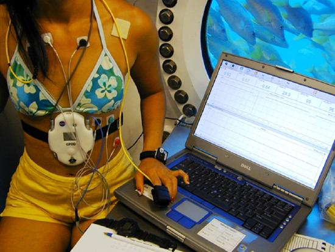
PHET EXPLORATIONS: NEURON
Stimulate a neuron and monitor what happens. Pause, rewind, and move forward in time in order to observe the ions as they move across the neuron membrane.
📖 OpenStax College Physics, Section 20.7. openstax.org · CC BY 4.0
| Section | Title |
|---|---|
| 20.1 | 20.1: Current |
| 20.2 | 20.2: Ohm’s Law - Resistance and Simple Circuits |
| 20.3 | 20.3: Resistance and Resistivity |
| 20.4 | 20.4: 20.4 Electric Power and Energy |
| 20.5 | 20.5: Alternating Current versus Direct Current |
| 20.6 | 20.6: Electric Hazards and the Human Body |
| 20.7 | 20.7: Nerve Conduction–Electrocardiograms |